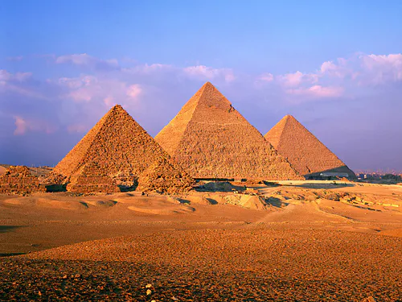

etapas
El antiguo egipto
Egipto es un país al norte de África, en el mar Mediterráneo, y es el hogar de una de las civilizaciones más antiguas de la Tierra. El nombre "Egipto" viene del griego Aegyptos, que era la pronunciación griega del antiguo nombre egipcio "Hwt-Ka-Ptah" ("Mansión del Espíritu de Ptah"), en origen el nombre de la ciudad de Menfis. Menfis fue la primera capital de Egipto, un famoso centro religioso y comercial; su buena posición queda reflejada en el hecho de que los griegos se refirieran a todo el país por su nombre.
Para los propios egipcios de la antigüedad, el país era conocido simplemente como Kemet, que significa "Tierra Negra", llamado así por la rica tierra oscura a lo largo del río Nilo donde comenzaron los primeros asentamientos. Más adelante el país pasó a conocerse como Misr, que significa "país", un nombre que los egipcios todavía usan hoy en día para hablar de su nación. Egipto prosperó durante miles de años (de alrededor de 8000 AEC hasta alrededor de 30 AEC) como una nación independiente cuya cultura era famosa por los grandes avances en todas las áreas del conocimiento, desde las artes hasta la ciencia y la tecnología o la religión. Los grandes monumentos por los que todavía se celebra Egipto reflejan la profundidad y grandiosidad de la cultura egipcia que influyó en tantas civilizaciones de la antigüedad, entre ellas Grecia y Roma.
Una de las razones de esta popularidad duradera de la cultura egipcia es el énfasis en la grandeza de la experiencia humana. Los grandes monumentos, las tumbas, los templos y el arte todos celebran la vida y se presentan como recordatorios de lo que existió antaño y de lo que el ser humano puede conseguir en su auge. Aunque en la cultura popular el antiguo Egipto a menudo se asocia con la muerte y los ritos mortuorios, incluso en estos hay algo que habla a la gente de otras épocas sobre lo que significa ser humano y el poder y el propósito del recuerdo.
Para los egipcios la vida en la tierra era tan solo un aspecto de un viaje eterno. El alma era inmortal y solo habitaba un cuerpo en el plano físico por un corto periodo de tiempo. Al morir, la persona sería juzgada en el Salón de la Verdad, y si se justificaba pasaría a un paraíso eterno conocido como el Campo de Juncos, que era un reflejo de la vida de la persona en la tierra. Una vez en el paraíso, la persona viviría en paz en compañía de quienes había amado en la tierra, incluidas las mascotas, en el mismo barrio junto al mismo río, bajo los mismos árboles en los que uno creyó perderse al morir. Sin embargo, esta vida eterna solo era posible para aquellos que habían vivido bien y de acuerdo con la voluntad de los dioses en el lugar más perfecto para llegar a tal objetivo: la tierra de Egipto.
Egipto tiene una larga historia que se remonta hasta mucho antes de la palabra escrita, las historias de los dioses, o los monumentos que han hecho famosa a esta cultura. Los indicios de una sobreexplotación del pasto en la tierra que ahora es el desierto del Sáhara se han datado en torno al 8000 AEC. Estos indicios, junto con los artefactos descubiertos, apuntan a una próspera civilización agrícola en la región en esa época. Como la tierra, ya entonces, era mayormente árida, los cazadores-recolectores nómadas fueron buscando el frescor del agua del valle del Nilo y empezaron a asentarse en algún momento antes del 6000 AEC.
La agricultura organizada comenzó en la región en torno a 6000 AEC y las comunidades conocidas como la cultura badariense empezaron a surgir en las orillas del río. La industria se desarrolló en torno a la misma época como demuestran los talleres de fayenza descubiertos en Abidos que datan de en torno a 5500 AEC. A la cultura badariense le siguió la amratiense, la gerzense y la semaniense, también conocidas como Naqada I, Naqada II y Naqada III, todas las cuales contribuyeron significativamente al desarrollo de lo que se convertiría en la civilización egipcia. La historia escrita del país empieza entre 3400 Y 3200 AEC, cuando se desarrolló la escritura jeroglífica de la cultura Naqada III. Para 3500 AEC la momificación ya se practicaba en la ciudad de Hieracómpolis y ya se construían grandes tumbas de piedra en Abidos. Xois se menciona ya como una ciudad antigua entre 3100-2181 AEC en la conocida Piedra de Palermo. Al igual que otras culturas del mundo, las comunidades agrarias pequeñas se centralizaron, llegando a convertirse en centros urbanos más grandes.
Historia temprana de Egipto
El periodo arcaico de Egipto (c. 3150 - c. 2613 AEC) dio lugar a la unificación de los reinos del norte y el sur bajo el rey Menes (también llamado Meni o Manes) de Alto Egipto, que conquistó el Bajo Egipto en c. 3118 AEC o c. 3150 AEC. Esta versión de la historia temprana viene de las Aegyptica (Historia de Egipto) del historiador de la antigüedad, Manetón, que vivió en el siglo III AEC durante la dinastía
Ptolemaica (323-30 AEC). A pesar de que los historiadores posteriores han disputado esta cronología, se sigue consultando en cuanto a la sucesión dinástica y la historia temprana del antiguo Egipto.
Los nombres geográficos del antiguo Egipto siguen la dirección del Nilo, por lo que el Alto Egipto es la región sur mientras que el Bajo Egipto es la zona del norte, más cerca del Mediterráneo. Narmer gobernó desde la ciudad de Hieracómpolis y después desde Menfis y Abidos. El comercio aumentó de manera importante bajo los gobernantes del periodo arcaico de Egipto, y las elaboradas mastabas, precursoras de las pirámides posteriores, empezaron a aparecer en las prácticas funerarias egipcias, que incluían técnicas de momificación cada vez más elaboradas.
Los dioses
Ya desde el período Predinástico en Egipto (c. 6000 - c. 3150 AEC) la cultura egipcia estaba definida por sus creencias en los dioses. Un mito de la creación temprano habla del dios Atum que se presentó en medio del caos antes del principio del tiempo y su palabra dio lugar a la creación. Atum estaba acompañado por la fuerza eterna de heka (la magia), personificada en el dios Heka y otras fuerzas espirituales que animaban el mundo. Heka era una fuerza primordial que infundía el universo y era la causa de que todo funcionara de la manera en que lo hacía; también daba lugar al valor central de la cultura egipcia: ma'at, la harmonía y el equilibrio.
Todos los dioses y sus responsabilidades se remontaban a ma'at y heka. El sol salía y se ponía como lo hacía y la luna viajaba a través del cielo, y las estaciones llegaban y se iban de acuerdo con el equilibrio y el orden que era posible gracias a estos dos agentes. Ma'at también estaba personificada como una divinidad, la diosa de la pluma de avestruz, a quien todo rey prometía todas sus habilidades y su devoción. El rey estaba asociado con el dios Horus en vida y con Osiris una vez muerto, basándose en un mito que se convirtió en el más popular de la historia egipcia.
Osiris y su hermana y esposa, Isis, eran los monarcas originales que gobernaban el mundo y que dieron a la gente los dones de la civilización. El hermano de Osiris, Set, tuvo celos de él y lo asesinó, pero fue devuelto a la vida por Isis, que después le dio un hijo, Horus. Sin embargo Osiris estaba incompleto, así que descendió a gobernar el inframundo mientras que Horus, una vez hubo crecido, vengó a su padre y derrotó a Set. El mito representa como el orden había triunfado sobre el caos, y se convertiría en un motivo persistente en la religión egipcia, los rituales mortuorios, los textos religiosos y el arte. No hubo ningún periodo en el que los dioses no fueran una parte integral de la vida diaria de los egipcios, y esto se ve claramente desde los albores de la historia del país.
El Imperio antiguo
Durante el periodo conocido como Imperio Antiguo de Egipto (c. 2613-2181 AEC), la arquitectura en honor a los dioses se desarrolló a un ritmo mayor, y se construyeron algunos de los monumentos más famosos de Egipto, como las pirámides o la Gran Esfinge de Guiza. El rey Djoser, que gobernó en torno al 2670 AEC, construyó la primera pirámide escalonada en Saqqara en torno al 2670, diseñada por su principal arquitecto y médico Imhotep (c. 2667-2600 AEC) que también escribió uno de los primeros textos médicos que describía el tratamiento para más de 200 enfermedades diferentes y que argumentaba que la causa de la enfermedad podía ser natural, en vez de la voluntad de los dioses. La gran pirámide de Keops (la última de las siete maravillas de la antigüedad) se construyó durante su reinado (2589-2566 AEC), seguida de las pirámides de Kefrén (2558-2532 AEC) y Micerino (2532-2503 AEC).
La grandiosidad de las pirámides en la meseta de Guiza, tal y como habrían estado en un principio, recubiertas de brillante caliza blanca, es testamento del poder y la riqueza de los gobernantes de esta época. Abundan las teorías acerca de la construcción de estos monumentos y tumbas, pero los arquitectos y expertos modernos no han llegado al consenso en ninguna de estas teorías. Teniendo en cuenta la tecnología de la época, dicen algunos, un monumento como la gran pirámide de Guiza no debería existir. Sin embargo, otros afirman que la existencia de tales construcciones y tumbas sugiere una tecnología superior que se ha perdido en el tiempo.
No hay ningún indicio de que los monumentos de la meseta de Guiza, o cualquier otro en Egipto, fueran construidos por esclavos, así como tampoco hay indicios que respalden una lectura histórica del libro bíblico del Éxodo. En la actualidad, la mayoría de los expertos rechaza la afirmación de que las pirámides, entre otros monumentos, fueran construidas por esclavos, aunque es cierto que había esclavos de diferentes nacionalidades en Egipto, que generalmente trabajaban en las minas. Los monumentos egipcios se consideraban trabajos públicos creados por el estado; se empleaban obreros con o sin experiencia y todos recibían un sueldo por su trabajo. Los obreros del emplazamiento de Guiza, que era simplemente uno más, recibían una ración de cerveza tres veces al día, y se han establecido claramente su alojamiento, sus herramientas e incluso su nivel de salud.
El primer periodo intermedio y los hicsos
La era conocida como el primer periodo intermedio de Egipto (2181-2040 AEC) vivió un declive del poder del gobierno central tras su colapso. Por todo Egipto se desarrollaron los distritos en gran medida independientes con sus propios gobernadores, hasta que surgieron dos grandes centros: Hieracómpolis en el bajo Egipto y Tebas en el alto Egipto. Estas ciudades fundaron sus propias dinastías que gobernaron sus regiones de manera independiente y luchaban intermitentemente la una con la otra por el control supremo hasta en torno al 2040 AEC, cuando el rey tebano Mentuhotep II (c. 2061-2010 AEC) derrotó a los ejércitos de Hieracómpolis y unificó Egipto bajo el gobierno de Tebas.
La estabilidad proporcionada por el gobierno tebano permitió que floreciera lo que hoy se conoce como el Imperio Medio (2040-1782 AEC). El Imperio Medio está considerado como la "época clásica" de Egipto, cuando el arte y la cultura llegaron a su apogeo y Tebas se convirtió en la ciudad más importante y rica del país. Según los historiadores Oakes y Gahlin, "la duodécima dinastía de reyes fueron gobernantes fuertes que establecieron el control no solo sobre todo Egipto sino también sobre Nubia al sur, donde se construyeron varias fortalezas para proteger los intereses comerciales egipcios" (11). El primer ejército se creó durante el Imperio medio, de mano del rey Amenemhat I (c. 1991-1962 AEC), la construcción del templo de Karnak comenzó con Senruset I (c. 1971-1926 AEC) y parte de la mejor literatura y arte egipcios se produjeron también en esta época. Sin embargo, la dinastía XIII era más débil que la XII y se distrajo con problemas internos, lo que permitió que un pueblo extranjero conocido como los hicsos se hiciera con el poder en el Bajo Egipto y el delta del Nilo.
Los hicsos son un pueblo misterioso, probablemente de la zona de Siria/Palestina, que aparecieron en Egipto por primera vez c. 1800 y se asentaron en la ciudad de Avaris. A pesar de que los nombres de los reyes hicsos son de origen semítico, no se ha establecido una etnia definida para este pueblo. Los hicsos fueron amasando poder hasta que pudieron tomar el control de una parte importante del Bajo Egipto para c. 1720 AEC, dejando a la dinastía tebana del Alto Egipto casi como un estado vasallo.
Esta era se conoce como el segundo periodo intermedio de Egipto (c.1782 - c. 1570 AEC). A pesar de que los egipcios despreciaban a los hicsos, cuyo nombre simplemente significa "gobernantes extranjeros", de hecho, introdujeron muchas mejoras notables en la cultura, tales como el arco compuesto, el caballo y el carro junto con el cultivo rotativo y ciertos desarrollos en el trabajo del bronce y la cerámica. Al mismo tiempo que los hicsos controlaban los puertos del Bajo Egipto, para el 1700 AEC el reino de Kush había ascendido hasta el sur de Tebas en Nubia y dominaba esa frontera. Los egipcios montaron varias campañas para echar a los hicsos y someter a los nubios, pero todas fracasaron hasta que el príncipe Ahmosis I de Tebas (c. 1570-1544 AEC) consiguió unificar el país bajo el gobierno tebano.
El Imperio Nuevo y el periodo amarniense
Ahmosis I dio comienzo a lo que se conoce como el Imperio Nuevo de Egipto (c. 1570 - c. 1069 AEC) que volvió a vivir la prosperidad del país bajo un gobierno central fuerte. El título de faraón para denominar al rey de Egipto proviene del periodo del Imperio Nuevo; a los monarcas anteriores se los llamaba simplemente reyes. Muchos de los soberanos egipcios más conocidos de hoy en día gobernaron durante este periodo y la mayoría de las imponentes estructuras de la arquitectura egipcia, tales como el Ramesseum, Abu Simbel, los templos de Karnak y Luxor, y las tumbas del Valle de los reyes y el Valle de las reinas se crearon o mejoraron de manera significativa durante este periodo.
Entre 1504 y 1492 AEC el faraón Tutmosis I consolidó su poder y expandió las fronteras de Egipto hasta el río Éufrates en el norte, Siria y Palestina al oeste y Nubia al sur. A su reinado le siguió el de Hatshepsut (1479-1458 AEC) que expandió enormemente el comercio con otras naciones, de las cuales la más conocida es el país de Punt. Su reinado de 22 años trajo paz y prosperidad a Egipto.
Su sucesor, Tutmosis III, continuó con sus políticas (aunque intentó borrar cualquier recuerdo de ella ya que se cree que no quería que sirviera de modelo para otras mujeres, porque se consideraba que solo los hombres eran dignos de gobernar) y, para cuando murió en 1425 AEC, Egipto era una nación grande y poderosa. Esta prosperidad llevó, entre otras cosas, a un aumento de la fabricación de cerveza de muchas variedades diferentes y a más tiempo para el ocio y el deporte. Los avances en la medicina llevaron a mejoras en la salud.
El baño ya era desde hacía tiempo una parte importante de la rutina diaria de los egipcios, ya que la religión lo alentaba y el clero daba ejemplo de ello. Sin embargo, en este momento se produjeron baños más elaborados, posiblemente más por ocio que por simple higiene. El papiro ginecológico de Kahun, que habla de la salud de la mujer y los anticonceptivos, se había escrito en torno al 1800 AEC y, durante esta época, parece que los doctores lo usaban extensivamente. La cirugía y la odontología se practicaban ampliamente y con gran habilidad, y los médicos prescribían cerveza para mejorar los síntomas de más de 200 enfermedades.
En 1353 AEC el faraón Amenhotep IV accedió al trono y poco después se cambió el nombre a Akenatón ("el espíritu vivo de Atón") para reflejar su creencia en un solo dios, Atón. Los egipcios, como ya se ha dicho, tradicionalmente creían en muchos dioses cuya importancia influía en todos los aspectos de su vida. Entre las deidades más populares se encuentran Amón, Osiris, Isis y Hathor. El culto de Amón, en aquel momento, se había hecho tan rico que los sacerdotes tenían casi tanto poder como el faraón. Akenatón y su esposa, Nefertiti, renunciaron a las creencias religiosas tradicionales y las costumbres de Egipto e instauraron una nueva religión basada en el reconocimiento de un solo dios.
Sus reformas religiosas en la práctica redujeron el poder de los sacerdotes de Amón, y lo pusieron en sus manos. Trasladó la capital de Tebas a Amarna para distanciar su gobierno aún más del de sus predecesores. A esto se lo conoce como el periodo amarniense (1353-1336 AEC) durante el cual Amarna creció como la capital del país y se prohibieron las costumbres religiosas monoteístas.
Entre sus muchos logros, Akenatón fue el primer gobernante en decretar un estatuario y un templo en honor a su esposa en vez de solamente a él mismo o los dioses, y utilizó el dinero que antes iba a parar a los templos para obras públicas y parques. El poder del clero cayó bruscamente a medida que fue creciendo el del gobierno central, que parece que fue el objetivo de Akenatón, pero no usó ese poder para el mejor interés de su pueblo. Las Cartas de Amarna dejan claro que estaba más preocupado por sus reformas religiosas que por la política exterior o las necesidades del pueblo de Egipto.
A su reinado le siguió el de su hijo, el gobernante egipcio más fácilmente reconocible hoy en día, Tutankamón, que gobernó en torno a 1336 - c. 1327 AEC. En un principio recibió el nombre de Tutankatón como reflejo de las creencias religiosas de su padre, pero al acceder al trono se cambió el nombre a Tutankamón para honrar al ancestral dios Amón. Volvió a restaurar los antiguos templos, se deshizo de todas las referencias de su padre a una sola deidad y devolvió la capital a Tebas. Su reinado se truncó a causa de su muerte y hoy en día lo que más se conoce de él es la grandiosidad intacta de su tumba, descubierta en 1922 EC, que en su momento fue la sensación internacional.
Sin embargo, el gobernante más grande del Imperio Nuevo fue Ramsés II (también conocido como Ramsés el Grande, 1279-1213 AEC) que comenzó los proyectos de construcción más elaborados de todos los gobernantes egipcios, y que gobernó de manera tan eficiente que tuvo los medios para hacerlo. Aunque la famosa batalla de Cades del 1274 AEC (entre Ramsés II de Egipto y Muwatalli II de los hititas) hoy en día se considera un empate, Ramsés la consideraba una gran victoria para Egipto y se celebró a sí mismo como un campeón del pueblo, y finalmente como un dios, en sus muchas obras públicas.
Su templo en Abu Simbel (construido para su reina Nefertari) representa la batalla de Cades, y el templo menor del enclave, siguiendo el ejemplo de Akenatón, está dedicado a la reina favorita de Ramsés, Nefertari. Bajo el reinado de Ramsés II, se firmó el primer tratado de paz del mundo (el Tratado de Cades) en 1258 AEC y Egipto disfrutó de una afluencia prácticamente sin precedentes, tal y como muestra el número de monumentos construidos o restaurados durante su reinado.
El cuarto hijo de Ramsés II, Jaemuaset (c. 1281 - c. 1225 AEC) es conocido como el "primer egiptólogo", gracias a la tarea que llevó a cabo de conservación y registro de los antiguos monumentos, los templos y los nombres de sus dueños originales. En gran parte es gracias a la iniciativa de Jaemuaset que el nombre de Ramsés II es tan destacado en tantos lugares de Egipto. Jaemuaset dejó escrita su propia tarea, el nombre del dueño o arquitecto original del monumento o templo, y el nombre de su padre.
Ramsés II llegó a ser conocido por las generaciones posteriores como "El gran ancestro", y reinó durante tanto tiempo que sobrevivió a la mayoría de sus hijos y sus mujeres. Con el tiempo, todos sus súbditos llegarían a haber nacido con él como gobernante y no tenían recuerdo de ningún otro. Disfrutó de una vida excepcionalmente larga, 96 años, más del doble de la esperanza de vida media de un egipcio de la antigüedad. Cuando murió, está escrito que muchos temían que había llegado el fin del mundo, ya que no habían conocido ningún otro faraón ni ningún otro tipo de Egipto.
La decadencia de Egipto y la llegada de Alejandro Magno
Uno de sus sucesores, Ramsés III (1186-1155 AEC), continuó con su política, pero para esta época la gran riqueza de Egipto había captado la atención de los Pueblos del Mar, que empezaron a hacer incursiones regulares a lo largo de la costa. Los Pueblos del Mar, al igual que los hicsos, son de origen desconocido, pero se cree que provienen de la zona meridional del Egeo. Entre 1276-1178 AEC los Pueblos del Mar supusieron una gran amenaza para la seguridad egipcia. Ramsés II los había derrotado en una batalla naval a principios de su reinado, al igual que hiciera después su sucesor, Merenptah (1213-1203 AEC). Sin embargo, tras la muerte de Merenptah, redoblaron sus esfuerzos, saqueando Cades, que entonces estaba bajo el control egipcio, y asolando la costa. Entre 1180 y 1178 AEC Ramsés III los combatió, derrotándolos finalmente en la batalla de Xois en 1178 AEC.
Tras el reinado de Ramsés III, sus sucesores intentaron mantener su política, pero se encontraron con la creciente resistencia del pueblo egipcio, de los territorios conquistados y especialmente de la clase sacerdotal. En los años después de que Tutankamón restaurara la antigua religión de Amón, y especialmente durante la larga prosperidad vivida bajo Ramsés II, los sacerdotes de Amón habían adquirido muchas tierras y amasado una gran fortuna, que ahora amenazaba al gobierno central y trastornaba la unidad de Egipto. Para la época de Ramsés XI (1107-1077 AEC), el final de la Dinastía XX, el gobierno egipcio estaba tan debilitado por el poder y la corrupción del clero que el país volvió a fracturarse y la administración central se colapsó, dando comienzo al llamado Tercer período intermedio de Egipto c. 1069-525 AEC.
Bajo el rey cushita Piye (752-722 AEC), Egipto volvió a unificarse y la cultura floreció, pero a principios de 671 AEC, los asirios, al mando de Esaradón, comenzaron su invasión de Egipto, conquistándolo para el 666 AEC bajo su sucesor, Asurbanipal. Dado que no tenían ningún plan a largo plazo para controlar el país, los asirios lo dejaron en ruinas en manos de los gobernantes locales y abandonaron a Egipto a su suerte. Sin embargo, Egipto se reconstruyó y fortificó, y ese era el estado en el que se encontraba el país cuando Cambises II de Persia atacó en la Batalla de Pelusio en 525 AEC. Conociendo la reverencia que los egipcios tenían por los gatos, que se consideraban representaciones vivas de la popular diosa Bastet, Cambises II ordenó a sus hombres que pintaran gatos en sus escudos y que llevaran gatos, y otros animales sagrados para los egipcios, al frente del ejército hacia Pelusio. Los ejércitos egipcios se rindieron y el país cayó en manos de los persas. Egipto continuaría bajo ocupación persa hasta la llegada de Alejandro Magno en 332 AEC.
Alejandro fue acogido como un libertador y conquistó Egipto sin pelear. Estableció la ciudad de Alejandría y pasó a conquistar Fenicia y el resto del imperio Persa. Tras su muerte en 323 AEC, su general Ptolomeo I Soter, llevó su cuerpo de vuelta a Alejandría y fundó la dinastía Ptolemaica (323-30 AEC). La última de los Ptolomeos fue Cleopatra VII, que se suicidó en 30 AEC tras la derrota de sus ejércitos, y de los de su consorte, Marco Antonio, por los romanos bajo órdenes de César Octavio en la batalla de Accio (31 AEC). Después de esto, Egipto se convirtió en una provincia del imperio romano (30 AEC-476 EC) y después del imperio bizantino (c. 527-646 EC), hasta que fue conquistado por los musulmanes árabes bajo el califa Umar en 646 EC y cayó bajo el dominio islámico.